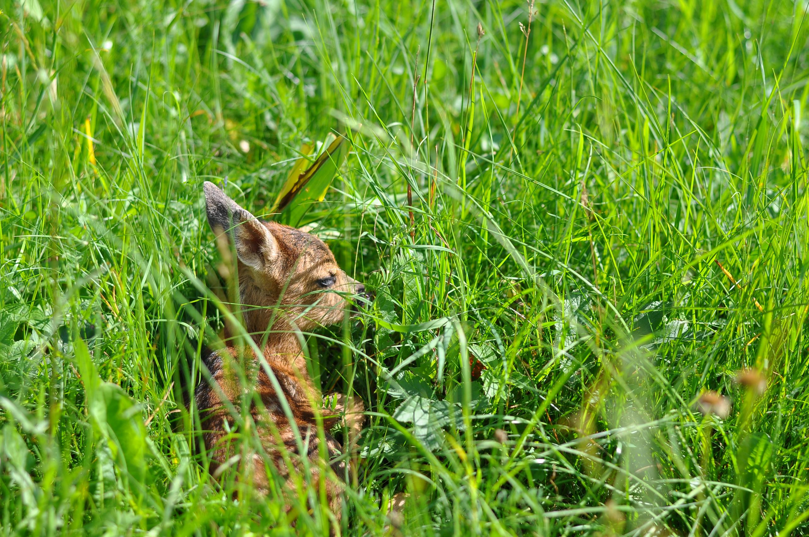
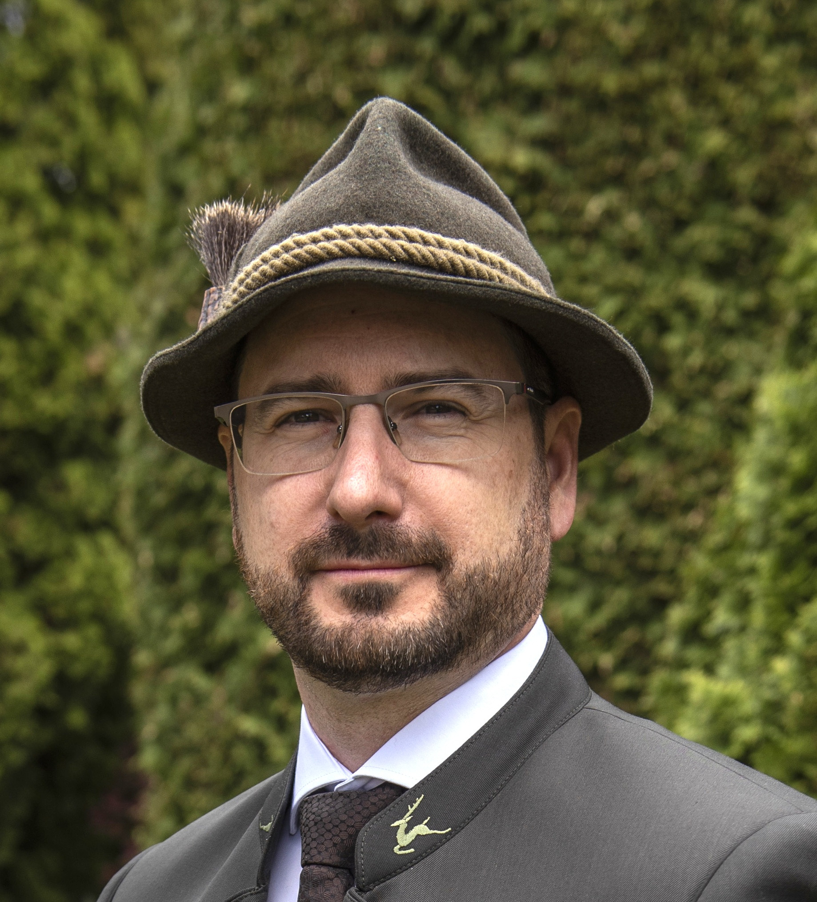
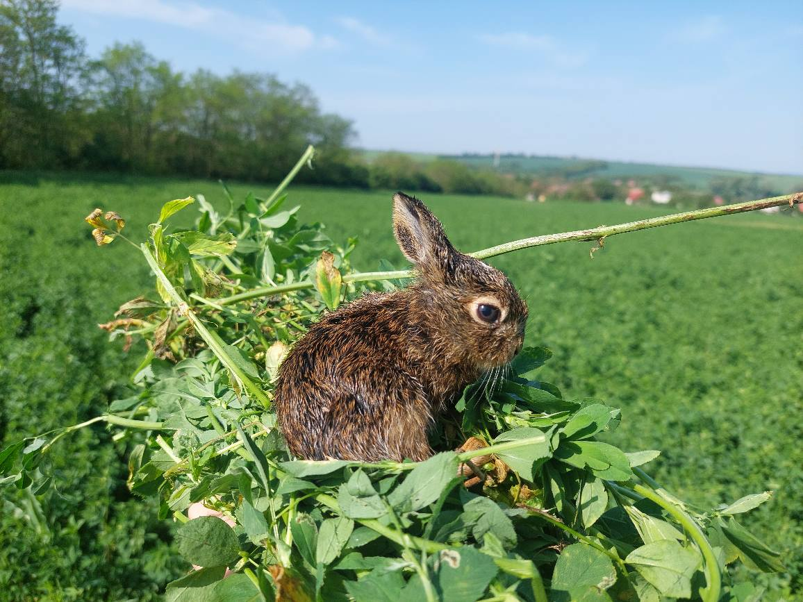

Budete kosiť a žať? Tak sa zapojte do projektu Živá lúka
Začína sa obdobie, kedy poľnohospodárov čakajú prvé kosby na lúkach. Neskôr v lete príde na rad aj zber obilnín a následne zber jesenných plodín. Občianske združenie Zeleň upriamuje pozornosť na dôležitý projekt Živá lúka, vďaka ktorému sa môže minimalizovať stret zvierat a poľnohospodárskej techniky práve počas žatvy alebo kosenia lúk. V rozhovore s predsedom občianskeho združenia Petrom Kaššákom sme sa pýtali, ako projekt funguje a prečo je dôležité šíriť povedomie o spolupráci poľnohospodárov a poľovníkov.

Projekt „Živá lúka“ spája poľovníkov, ochranárov aj poľnohospodárov. Ako vznikla myšlienka prepojiť tieto skupiny a čo je jeho hlavným cieľom?
Projekt Živá lúka má za cieľ informovať a chrániť. A to tak, že poskytuje portál na evidenciu a ohlasovanie kosby krmovín a trvalých trávnych porastov poľnohospodárom a následne tieto informácie sprístupní poľovníkom v danom regióne, ktorí môžu za pomoci dobrovoľníkov vykonať potrebné preventívne aktivity na daných lokalitách.
Myšlienka vznikla v roku 2017, keď sme sa nechali inšpirovať Českou republikou, kde na univerzite v Brne vznikol obdobný projekt a zároveň sme videli v Nemecku, že podobnú aktivitu poľovníkov a dobrovoľníkov podporuje priamo výrobca žacej techniky. Preto sme za naše občianske združenie iniciovali projekt Živá lúka, ktorý spoločne so Slovenskou poľovníckou komorou zaviedol monitoring kosieb a následných aktivít a vytvoril sa portál na tieto účely.
Každoročne počas jarných a letných kosieb sú práve mláďatá voľne žijúcej zveri rizikové vo vzťahu k poľnohospodárskym prácam. Aký veľký je tento problém na Slovensku a prečo je dôležité o ňom hovoriť viac?
Z dotazníkového prieskumu, ktorý sme realizovali na začiatku roku 2018 medzi užívateľmi poľovných pozemkov, teda na začiatku projektu, sme zistili, že na Slovensku až 72 percent poľnohospodárov neohlasuje poľovníckym subjektom termín realizácie kosby. Preto sme realizovali portál Živá lúka, ktorý umožňuje elegantne, rýchlo a jednoduchým spôsobom nad mapovými podkladmi zaznačiť lokalitu a ohlásiť plánovanú kosbu.
Z odpovedí subjektov, ktoré sa zapojili do nášho dotazníkového prieskumu a zároveň z tých, ktoré evidovali straty na zveri počas kosby, nám vyšlo číslo asi 5900 kusov mláďat srnčej zveri, ktoré každoročne uhynie počas jarnej kosby krmovín a trvalých trávnych porastov. Popri tom samozrejme aj iné druhy zveri, ako sú na zemi hniezdiace bažanty a iné vtáctvo či malé zajace. Tu sa však ťažšie rieši evidencia strát a preto sú tie čísla nižšie.
Portál má poľnohospodárom uľahčiť splnenie oznamovacej povinnosti. V čom je tento systém praktickejší a výhodnejší oproti bežným formám oznamovania?
Forma ohlasovacej povinnosť pre poľnohospodárov v zákone nie je špecifikovaná. Čiže aj formy ústne alebo SMSkou či telefonátom sú realizovateľné. Avšak elektronicky pomocou portálu Živá lúka je to rýchle, dá sa oznam v prípade zmeny editovať a táto informácia je okamžite distribuovaná poľovníkom, ktorí obhospodarujú daný revír/územie (ak sú zaregistrovaní v portáli). A zo strany poľnohospodára sa to dá aj spätne vyhľadať a overiť, že takúto informáciu zverejnil a teda si splnil zákonnú povinnosť.

Ako to teda v praxi funguje?
Poľnohospodár sa teda zaregistruje, ohlási kosbu s konkrétnym dátumom, časom a miestom. Cez mapový podklad vie informovať o plánovanej aktivite. Do portálu sa môžu registrovať len aktívni poľovníci. Prihlásiť sa môžu aj dobrovoľníci, ktorí uvedú, v ktorých katastroch môžu pomáhať.
Následne zaregistrovaní poľovníci dostanú informáciu o plánovanej kosbe a to aspoň 24 hodín pred kosbou. Poľovníci v teréne prehľadávajú danú lokalitu. Keď nájdu zviera, tak ho môžu odohnať. Ďalšou možnosťou je, že ho aj s ochrannými rukavicami a s trávou v rukách odnesú do bezpečia či prípadne ho prikryjú debničkou a traktorista ho strojom obíde. Po kosbe zviera odokryjú.
V roku 2026 sa do projektu zapájajú aj skupiny s dronmi a termokamerami. Ako konkrétne budú tieto moderné technológie pomáhať pri záchrane mláďat pred kosbou?
V minulosti sa preventívne aktivity vyhľadávania zveri (alebo jej plašenia) pred kosbou uskutočňovali formou rojníc. Tento spôsob je náročný nielen z pohľadu času, ale aj z pohľadu potrebných osôb, ktoré musia túto aktivitu vykonávať. Niekedy boli zapojené aj poľovne upotrebiteľné psy do hľadania, no výsledky boli nie vždy stopercentné. A zároveň poľnohospodár nerád videl, keď mu porast pošliapalo niekoľko desiatok nôh pred kosbou.
Pomoc dronov s termotechnikou posúva aktivity na inú úroveň. Potrebujeme na to menší počet osôb na rovnakú jednotku plochy a efektivita techniky pri vyhľadávaní je omnoho vyššia ako efektivita ľudských zmyslových orgánov. Preto máme nádej, že na miestach, kde sa podarí uskutočniť preventívne aktivity s dronmi, bude nielen spokojnosť poľnohospodárov s minimálnym poškodením porastu, ale aj vysoká účinnosť lokalizovania zveri. Bohužiaľ, nemáme na Slovensku také veľké pokrytie, aby sa dali realizovať aktivity vždy a všade, avšak je snaha či už spolupracujúcich občianskych združení alebo aj jednotlivcov disponujúcich technikou o zapojenie sa.
Tvrdíte, že zákonná lehota 72 hodín vopred býva v praxi často problematická. Aké riešenia navrhujete, aby bola ochrana zvierat reálne vykonateľná a zároveň neznižovala efektivitu poľnohospodárov?
Z praxe vieme, že zákonom stanovená lehota 72 hodín je lehota, ktorá sa nie vždy dá dosiahnuť. A to aj kvôli poveternostným podmienkam, ktoré sa za 3 dni môžu zmeniť, ale aj s ohľadom na dostupnosť žacej či inej techniky potrebnej na spracovanie pokoseného materiálu. A práve preto vidíme význam elektronickej komunikácie, kde sa dajú informácie rýchlo a efektívne aktualizovať. Avšak minimálne 24 hodín pred kosbou, kedy už je viac menej isté, že sa uskutoční, by bolo vhodné ju zaevidovať na portáli.
Preventívne aktivity s dronmi a termotechnikou je nutné pripraviť a na samotnej ploche realizovať v skorých ranných hodinách, kedy je rozlišovacia schopnosť senzorov dostatočná a nie je ovplyvnená zvýšenou teplotou prostredia. Preto drvivá väčšina aktivít sa začína hneď ráno a tým pádom ani nedochádza k obmedzeniu času plánovanej kosby. Základom je ale komunikácia.

V ČR realizujú obdobný projekt aj vďaka dobrovoľníkom, ktorí aktívne vyhľadávajú mláďatá a premiestňujú ich z rizikových porastov na vhodnejšie miesta. Je obdobná forma spolupráce s dobrovoľníkmi aj na Slovensku, teda tiež to u nás úspešné funguje?
V ČR sú omnoho ďalej. Vláda cez tamojšie ministerstvo poľnohospodárstva poskytuje dotácie poľovníckym organizáciám na termodrony, aby sami vedeli realizovať a zastrešovať tieto aktivity. A z pohľadu štruktúry pôdy a jej využívania je omnoho viac plôch, ktoré sa kosia v exponovanom termíne. Takže v ČR boli straty na zveri ešte vyššie ako na Slovensku.
Na Slovensku exituje snaha rôznych dobrovoľníckych skupín zapojiť sa. Avšak pre rozvinutie týchto aktivít do širšej miery je potrebná informovanosť zo strany poľnohospodárov a následne aj zapojenie sa poľovníkov. Manipuláciu s voľne žijúcou zverou upravuje zákon o poľovníctve a preto je vždy potrebná súčinnosť alebo aspoň informovaný súhlas poľovného združenia v danej oblasti na týchto aktivitách. Verím, že aj za pomoci informovania členov Slovenskej poľnohospodárskej a potravinárskej komory sa zlepší oznamovacia povinnosť poľnohospodárov využívajúc portál Živá lúka a následne aj zapojenie dobrovoľníkov zo strany poľovníckych združení a spoločností.
Čo by ste dnes odkázali poľnohospodárom, samosprávam aj verejnosti, aby sa do iniciatívy „Živá lúka“ aktívne zapojili a pomohli chrániť mladé životy v prírode?
Aby sa zapojili a nebáli sa toho. Nie je to nástroj na perzekúciu. Portál živá lúka je nástroj na informovanie, aby sa v krajine hospodárilo na všetkých úrovniach efektívne, s rozumom a hlavne v kooperácii všetkých zložiek, ktoré spravujú náš slovenský vidiek.
Zhovárala sa Jana Holéciová, hovorkyňa SPPK